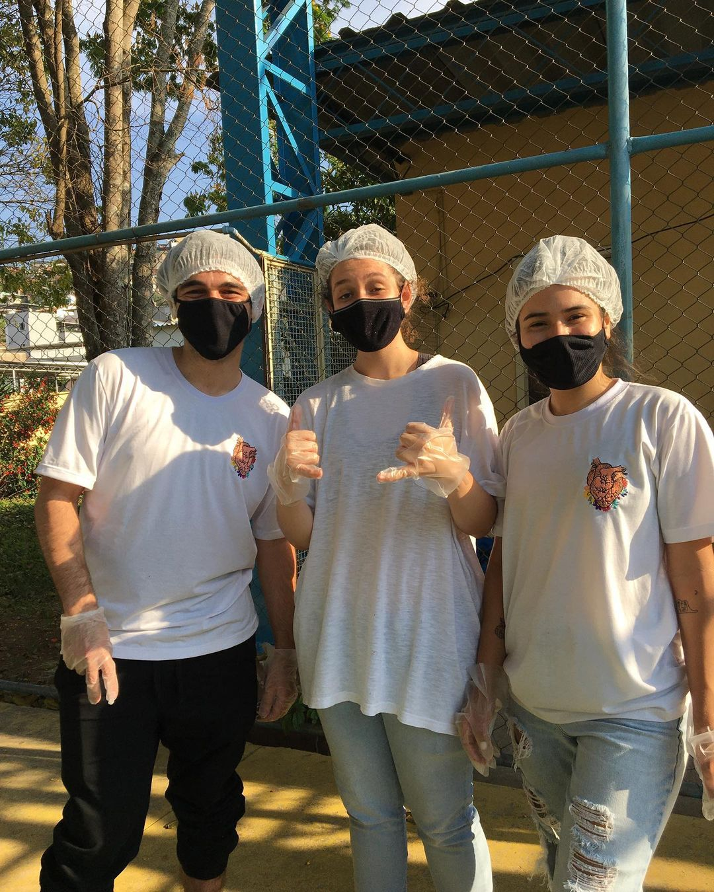
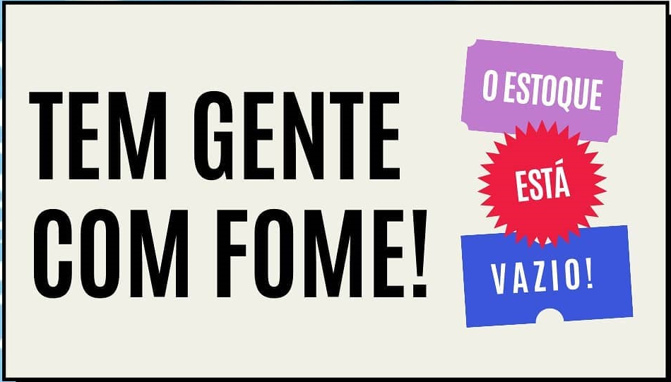

Projetos
Você já quis fazer trabalho voluntário?
Ao doar sua energia e sua generosidade, o voluntário está respondendo a um impulso humano básico: o desejo de ajudar, de colaborar, de compartir alegrias, de aliviar sofrimentos, de melhorar a qualidade da vida em comum. Compaixão e solidariedade, altruísmo e responsabilidade são sentimentos profundamente humanos e são também virtudes cívicas. Vamos juntos transformar o mundo em um lugar melhor!!
Depois disso, a secretaria entra em contato com você e pega todooooos os seus dados pra te deixar cadastrado na nossa planilha, e te colocar na fila de espera do setor específico que você se encaixa! Então, a equipe do RH agenda uma entrevista (online) pra te conhecer melhor, tirar suas dúvidas e preparar a documentação onde você se torna um voluntário oficial! Daí pra frente é muita alegria e trabalho duro! Você entra pra equipe do setor escolhido, passa por um treinamento e começa a agir junto com a gente!
Preencha nosso formulário aqui.Fome
Durante esse período de crise na saúde pública, muitas famílias estão em situação de vulnerabilidade, muitos aspectos e a fome é um dos problemas que mais tem mais urgência.
- Pontos de arrecadação de alimentos:
- Santa Cruz Shopping - Setor Verde, loja 30B
- Shopping Jardim Norte – L2, loja 230
- Medicales - Galeria Pio X, Primeiro Piso, Centro
- Farmarte - Rua Braz Bernardino, 101, Centro
- Contas Bancárias:
- Pix: (32) 98458-4915
- PicPay: @florescerjr
Voluntariado em Ação
Desenvolvemos oficinas de lazer e esporte para crianças e jovens, além de distribuição de cestas básicas, nos bairros: Chapadão, Dom Bosco e Lurdes.